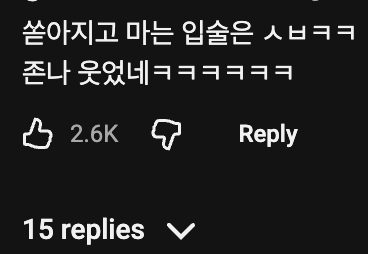

(깜짝, 피곤, 지침)
(벌써부터 핑크가 보이는 블랙)
(끔찍한 시간을 보내게될거라는 표정의 페페)
비슷한 흐름으로 '내가 핑거스냅 하면 니가 게이였다는걸 잊는다'
이게 ㅈㄴ웃겼음
https://www.dogdrip.net/708896485
자신이 게이였던 기억이 지워진 사람
난 게이가 아닌데?
Exactly
만약! 메두사의 HAIR가 뱀이라면
메두사의 '모든' HAIR가 뱀인가?
(대충 메두사가 뷰지털로 자위하는 상상)
뱀지털ㄷㄷ
나는 얘들이 두바이에 산다는게 제일 놀라웠음
IF!!!!!